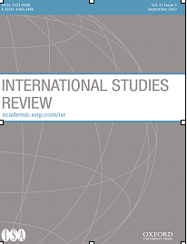

收录于合集 #新刊速递 123个
期刊简介

《国际研究评论》（International Studies Review）创刊于1957年，原名为Mershon International Studies Review，于1999年更改为当前的刊名，卷编号从1重新开始。该期刊是由牛津大学出版社代表国际研究协会出版的同行评审学术期刊，以季刊形式发行。主编是Amanda Murdie。2018年影响因子（Impact Factor）为2.076。
本期编委
编译、校对：王泽尘 崔宇涵 赵雷 王川 陈勇
审核：施榕
排版：李佳霖
本期目录
1. 环境合作对缔造和平的影响：定义、机制和经验证据
The Impact of Environmental Cooperation on Peacemaking: Definitions, Mechanisms, and Empirical Evidence
2. 国际关系学中的具体化：国际社会概念具体化的过程和后果
Reification in IR: The Process and Consequences of Reifying the Idea of International Society
3. 转型正义与外交政策的关系：国家寻求本体性安全的低效因果关系
The Transitional Justice and Foreign Policy Nexus: The Inefficient Causation of State Ontological Security-Seeking
4. 东亚国际关系：一种新的研究前景
The International Relations of East Asia: A New Research Prospectus
5. 国际关系中思想流派的问题
The Schools of Thought Problem in International Relations
6. 回顾第二次大辩论： 探究国际关系研究中定性—定量分化的影响
The Second Great Debate Revisited: Exploring the Impact of the Qualitative- Quantitative Divide in International Relations
7. 国际政治经济学研究中如何对待全球环境变化： 分析国际政治经济学领域最具影响力的调查文本
The Treatment of Global Environmental Change in the Study of International Political Economy: An Analysis of the Field’s Most Influential Survey Texts
8. 无人机扩散与管制（军民）两用技术的挑战
Drone Proliferation and the Challenge of Regulating Dual-Use Technologies
9. 媒体生态转变背景下的国关研究转向： 新媒体中的国关文献状况
A Turning IR Landscape in a Shifting Media Ecology: The State of IR Literature on New Media
摘要译文
1.
**** 环境合作对缔造和平的影响:定义、机制和经验证据 ****
** 【题目】** The Impact of Environmental Cooperation on Peacemaking:Definitions, Mechanisms, and Empirical Evidence
【作者】 Tobias Ide（墨尔本大学）
【摘要】 关于利用环境合作缔造和平的文献声称，互相冲突的团体可以搁置分歧，在共同面临环境挑战时进行合作，从而促进它们之间的和平。这项研究首次全面回顾了广泛而分散的关于环境与和平的联系的经验证据。为此，它区分了对和平的三种理解，并确定了将环境合作与和平联系起来的四种机制。结果表明，环境合作可以减少国家内部暴力，促进国家内部和国家之间象征性的和解，但这在很大程度上取决于若干情境因素。将环境合作与和平联系起来的最相关的机制是理解和信任的增加，特别是各种制度的建立。但同时，以环境合作缔造和平不大可能对国家或群体之间的一体化产生实质性的影响。根据这些发现，这篇文章为后续的研究提供了四项建议: (一)评估环境合作与其他促进和平的因素（较少取决于具体情境）之间的相关性；(二)更加注重将环境合作与建立和平联系起来的机制；(三)聚焦于对和平的三种理解之间的相互作用和不同的时间范围；(四)研究通过环境缔造和平的不利方面，以便更细致地评估和进一步辨识相关的情境因素。
The literature on environmental peacemaking claims that groups in conflict can put aside their differences and cooperate in the face of shared environmental challenges, thereby facilitating more peaceful relations between them. This study provides the first comprehensive review of the widely dispersed empirical evidence on such environment-peace links. In order to do so, it distinguishes three understandings of peace and identifies four mechanisms connecting environmental cooperation to peace. The results suggest that environmental cooperation can facilitate the absence of violence within states as well as symbolic rapprochement within and between states, although such links are strongly dependent on the presence of several contextual factors. The most relevant mechanisms connecting environmental cooperation to peace are an increase in understanding and trust and especially the build-up of institutions. By contrast, environmental peacemaking is unlikely to have an impact on substantial integration between states or groups. Based on these findings, the article offers four suggestions for future research: (i) assess the relevance of environmental cooperation vis-à-vis other (presumably less context-dependent) drivers of peacemaking, (ii) pay more attention to the mechanisms connecting environmental cooperation to peacemaking, (iii) focus on the interactions between and the different time horizons of the three understandings of peace, and (iv) study the downside of environmental peacemaking to provide a more nuanced assessment and identify further relevant contextual factors.
【编译】 王泽尘
【校对】崔宇涵
2.
国际关系学中的具体化：国际社会概念具体化的过程和后果
【题目】 Reification in IR: The Process and Consequences of Reifying the Idea of International Society
【作者】 Katarzyna Kaczmarska（爱丁堡大学）
【摘要】 本文以国际社会的概念为例，研究了国际关系学中的争议问题——具体化问题。它展现了这一概念的具体化过程，即作为国际政治研究中的几个互相竞争的框架之一的国际社会，如何被认为是一个客观的、不言而喻的国际政治事实以及拥有机构的实体。为此，作者追溯了英国学派的主要著作，并考察了它们对这一概念的发展和逐渐具体化的贡献。作者认为，具体化是知识生产过程中固有的个体策略和学科实践的结果，这在既需要建立和维持研究纲领，又需要提供对世界事件的合理解释时尤其重要。在讨论具体化的后果时，作者认为具体化不仅对研究结果有负面影响，而且对研究过程也有负面影响。一个具体化的类别一旦成为思考和谈论国际政治的默认语言，就会收窄对国际政治的不同解读的路径。此外，（认为）国际社会是拥有机构（的实体），就掩盖了国际政治具体行动背后的真正能动者。
This article studies the contentious problem of reification in international relations (IR) on the example of the idea of international society. It shows how the idea became reified, that is, how the move was made from approaching international society as one of several competing frameworks for the study of international politics to considering it an objective fact, a self-evident reality of international politics, and an entity in the possession of agency. For this purpose, I trace key writings of the English school and survey their contribution to the idea’s development and gradual reification. I posit that reification has been the outcome of individual strategies and disciplinary practices pertaining to the knowledge production process, in particular the perceived need to establish and maintain a research program while continuing to provide viable explanations of world events. In discussing the consequences, I argue that reification adversely affects not only research outcomes but also the study process. A reified category, once it becomes a default language through which to think and talk about international politics, narrows down avenues for diverging interpretations of international politics. Furthermore, endowing international society with agency hides real agents behind specific actions in international politics.
【编译】 王泽尘
【校对】崔宇涵
3.
转型正义与外交政策的关系： 国家寻求本体性安全的低效因果关系
【题目】 The Transitional Justice and Foreign Policy Nexus: The Inefficient Causation of State Ontological Security-Seeking
【作者】 Maria Mälksoo（肯特大学）
【摘要】 追求转型正义的方法如何为一个国家的国际行动创造前提条件，使特定政策和实践能够在周边和国际社会普遍适用？本文将寻求本体性安全作为国际政治中的普遍社会机制进行剖析，使有效地概念化一国转型正义与外交政策间的联系成为可能。作者超出了对转型正义合规与否的二分法，通过测量国家自身的主观意识对行为的驱动作用，作者建立了一个分析框架，以解释国家寻求本体性安全如何影响国家的重大转型和转型后的国家认同分裂、紧接而来的对真相与正义的政治探索以及寻求本体性安全在国家制定和执行特定外交政策时所引发的国际反响。作者提出了一种对国家转型正义所引发的国际后果的类型学，区分了反思性和记忆性的安全导向方法，两者分别会产生合作性和冲突性的外交政策行为。后苏联时代俄罗斯政权对其前任政权的镇压行为进行有限的政治问责，以及它在当代国际政治中采取日益独断专行和对抗姿态的例子，为上述联系提供了实证支持。
How does an approach towards transitional justice produce preconditions for a country’s international action, enabling certain policies and practices in the immediate neighborhood and international society at large? This article unpacks ontological security-seeking as a generic social mechanism in international politics, which makes it possible to productively conceptualize the connection between a state’s transitional justice and foreign policies. Going beyond the dichotomy of transitional justice compliance and noncompliance by gauging the role of states’ subjective sense of self in driving their behavior, I develop an analytical framework to explain how state ontological security-seeking relates to major transitions and consequent state identity disjuncture, the ensuing politics of truth-and-justice-seeking, and its international resonance in framing and executing particular foreign policies. I offer a typology of the international consequences of states’ transitional justice politics, distinguishing between reflective and mnemonical security-oriented approaches, spawning cooperative and conflictual foreign policy behavior, respectively. The empirical purchase of the purported nexus is illustrated with the example of post-Soviet Russia’s limited politics of accountability toward the repressions of its antecedent regime and its increasingly self-assertive and confrontational stance in contemporary international politics.
【编译】 崔宇涵
【审校】 赵雷
4.
东亚国际关系：一种新的研究前景
【题目】 The International Relations of East Asia: A New Research Prospectus
【作者】 Rosemary Foot（牛津大学）；Evelyn Goh（澳大利亚国立大学）
【摘要】 东亚因其经济活力、日益增长的影响力、中国对美国区域及全球霸权的挑战，以及其他诸如朝鲜半岛问题这样的冲突热点，成为了一个对全球秩序具有重要意义的地区。对于这一地区的学术分析，既需要重视该地区固有的微妙之处，也需要将这种微妙之处与更广泛的国际体系背景联系起来。许多分析家已经开始提及东亚国际关系中具有挑战性的特点，尤其试图解释日益增强的经济相互依赖如何与高度紧张的安全局势共存。这篇文章提供了一个研究计划来分析这些明显矛盾的趋势，提出了更适用于研究具有双重性、混合性和偶然性的地区国际关系的研究问题和方法。作者提出了一种衔接分析框架(Conjunctions Analytical Framework)，用于探索在区域-全球和单元- 区域/全球的分析层次之间的衔接中发生了什么——在这个“灰色区域”中，（各种）社会形态相遇并互动。作者的目标是帮助塑造未来东亚国际关系的研究，并提出更有效的方法来分析东亚地区和全球政治的复杂现实。
East Asia is a region of signal importance for global order because of its economic dynamism and growing heft, China’s challenge to the United States as incumbent regional and global hegemon, and other conflict hotspots like the Korean peninsula. This requires academic analysis that both appreciates the subtleties inherent to this region and can relate them to the wider systemic context. Many analysts have begun to allude to the challenging characteristics that are present in the international relations of East Asia, in particular struggling to explain how growing levels of economic interdependence can coexist with heightened security tensions. This article offers a research prospectus that suggests ways of analyzing these apparently contradictory trends. It proposes the development of research questions and approaches that are more suited to studying the international relations of a region with characteristics that we define as dual, hybrid, and contingent. We propose a Conjunctions Analytical Framework that explores what happens at the conjunctions of the regional-global and the unit-regional/global levels of analysis—the “grey areas” where social formations meet and interact. We aim to help shape the future study of the IR of East Asia and to suggest more effective ways of analyzing the complex reality of East Asia’s regional and global politics.
【编译】 赵雷
【校对】 王川
5.
国际关系中思想流派的问题
【题目】 The Schools of Thought Problem in International Relations
【作者】 Joseph M Grieco（杜克大学）
【摘要】 很多学者对国际关系领域的研究和教学被框定为相互竞争的思想流派之间的冲突的趋势感到不满。作者研究了两个主要的改革选项，并提供了一条可供选择的发展路径。第一种选项，作者称之为分析的单一主义，要求放弃国际关系学中的各流派，代之以单一的、统一的国际关系研究框架。由于狭隘本体论和排他性认识论的局限，这一选择被遗漏的变量偏差和无法完全模拟重要的国际进程所困扰。第二种选项是分析的折衷主义，认为进步的国关研究可能通过思考不同国关流派中因果关系要素之间的互动而产生。分析折衷主义有前途，但也面临严重的挑战，因为它偏好定性方法和特定情境的认识论。然后，作者概述了不同流派学者间合作性争鸣的过程，在这一过程中不同流派通过彼此间的批判促进了各流派思想的发展完善，作者指出这种过程是推进国关研究的一种可能的方式。
Many scholars are dissatisfied with the tendency of research and teaching in the field of international relations to be framed as clashes among competing schools of thought. I examine two prominent options for reform that relate to the schools and offer one element of an alternative path forward. The first option, which I term analytical singularism, calls for the abandonment of the IR schools and their replacement with a single, uniform framework for the study of international relations. By virtue of a constricted ontology and partialist epistemology, this option is plagued by omitted variable bias and underspecified modeling of important international processes. The second option, analytical eclecticism, suggests that improved IR studies might emerge from the consideration of interactions between causal factors that are drawn from the different IR schools of thought. Analytical eclecticism holds promise but faces serious challenges arising from its preference for qualitative methods and context-specific epistemology. I then outline a process of collaborative challenges between adherents of the different IR schools as one way by which we might advance research in international relations.
【编译】 赵雷
【审校】王川
6.
回顾第二次大辩论： 探究国际关系研究中定性-定量分化的影响
【题目】 The Second Great Debate Revisited: Exploring the Impact of the Qualitative-Quantitative Divide in International Relations
【作者】 Quan Li（德克萨斯州农工大学）
【摘要】 在国际关系学“第二次大辩论”开始半个世纪后，学者们仍然以定性与定量的差异作为画疆墨守的主要方式，然而我们还没有很好地把握这种分化的影响。作者的研究探索了这种分化如何塑造了学者的动机和行为，以及如何影响学术界的组织和知识生产。这种分化的影响体现在采取不同研究方法的研究在相对数量和影响方面的分布差异。不太明显但更重要的是，这种差异影响了定量研究在不同类型的机构、不同领域和期刊，以及在政策参与方面的分布。通过使用1980-2014年间12家顶级期刊的7792篇国际关系论文的TRIP数据库，作者将期刊文章分为三大类：仅采用定量方法、仅采用定性方法和采用混合研究方法的，并以相似标准将作者机构归类：只发表定量研究、只发表非定量研究、发表不同比例定量研究的。值得注意的是，随着时间推移，定性研究和定量研究在相对数量和影响方面的地位发生了变化，定量研究更有可能被发表，但近10年中被引用的次数仅略多。更重要的是，这种分化产生了一些不太明显但更严重的后果。过去35年里，在12本顶级期刊上发表过国际关系研究论文的1111家机构中，有三分之二的机构只发表非定量研究；53家机构发表的定量研究论文超过了定量研究总数的一半；发表纯定量研究或非定量研究的机构构成了两个阵营。政治科学类期刊发表的定量研究越来越多而且不断趋同；国际关系类期刊也在发表更多的定量研究，但定性与定量的分化持续存在，并形成两个集群。定量研究论文与政治科学类期刊提供的政策建议明显少于定性研究论文和国际关系类期刊。为了克服这种持久并自我延续的分化，我们必须更好地理解它的影响，学会欣赏其他研究方法，并改变我们培养未来学者的方式。
Half a century after the “Second Great Debate” in international relations (IR) started, scholars still perceive the qualitative versus quantitative division as their principal divide, and yet we do not have a good grasp of the impact of this divide. My research explores how the divide shaped the incentives and behaviors of scholars and influenced the organization of our academic communities and knowledge production. The impact of the divide expressed itself in the distribution of research among methodologies in terms of relative quantity and impact. Less obviously, and yet more importantly, the divide influenced the distribution of quantitative research among different institution types, across fields and journals, and with respect to policy engagement. Using the TRIP database of 7,792 IR articles in twelve top journals from 1980 to 2014, I classify journal articles into three categories—quantitative-only, qualitative-only, and mixed-methods—and categorize author institutions into similar types—publishing quantitative research only, producing nonquantitative work only, and publishing various proportions of quantitative research. Notably, qualitative and quantitative works switched positions over time in terms of relative quantity and impact, with quantitative research more likely published but only slightly more cited in the recent decade. More importantly, the divide produced other less obvious but more serious outcomes. Among 1,111 institutions that ever published IR research in twelve top journals over thirty-five years, two-thirds published nonquantitative research only; fifty-three institutions published more than half of all quantitative articles; institutions publishing quantitative-only or nonquantitative-only research constituted two modal categories. Political science journals published more quantitative research, persistently and with growing convergence; IR journals also evolved toward publishing more quantitative research though with persistent divergence and forming two clusters. Quantitative articles and political science journals were significantly less engaged in providing policy prescriptions than qualitative articles and IR journals. To overcome this lasting and self-perpetuating divide, we must better understand its impact, learn to appreciate alternative approaches, and change the way we train future scholars.
【编译】崔宇涵
【校对】赵雷
7.
国际政治经济学研究中如何对待全球环境变化： 对国际政治经济学领域最具影响力的调查文本的分析
【题目】 The Treatment of Global Environmental Change in the Study of International Political Economy: An Analysis of the Field’s Most Influential Survey Texts
【作者】 Ryan M Katz-Rosene（渥太华大学）
【摘要】 人类活动作为战后全球化的一部分对全球环境有着极为深刻的影响，并且影响程度日益增强。反之，全球环境变化日益成为塑造全球政治经济的重要力量，对贸易、金融、发展、增长、治理和国家间关系等方面产生了广泛影响。通过对国际政治经济学领域最具影响力的调查文本进行分析，本文旨在检验全球环境变化是如何被描述和解释给国际政治经济学专业的学生。尽管大多数的文本极为准确地反映出了在更广泛的领域研究全球环境变化的路径（将全球环境变化描述为一个值得深入研究的新兴议题），但本文对这种框架提出质疑，认为全球环境变化应该成为一个更为紧迫的议题。换言之，虽然已经有了一种对全球环境变化影响力的公认理解，即全球环境变化日益增长的影响力是塑造全球政治经济的主要力量（反之亦然），但仍有机会在该领域的主要文本中更好地向学生解释全球政治经济与环境变化之间的辩证关系。
Human activities taking place as part of postwar globalization have had a profound and intensifying impact on the global environment. In turn, global environmental change (GEC) is becoming an increasingly influential force in shaping the global political economy, with wide-ranging impacts on trade, finance, development, growth, governance, and interstate relations. This article examines how GEC is described and explained to students of international political economy (IPE), by reviewing the field’s most influential survey texts. It finds that while most of the texts reflect the broader field’s approach to GEC fairly accurately (in depicting GEC as an “emerging issue” warranting further study), this article problematizes this framing and argues that GEC ought to be given more urgent attention. That is, despite offering a tacit understanding of GEC’s increasing influence as a central force shaping the global political economy (and vice versa), there remains an opportunity to better explain this dialectic to students within the field’s primary texts.
【编译】王川
【校对】陈勇
8.
无人机扩散与管制（军民）两用技术的挑战
【题目】 Drone Proliferation and the Challenge of Regulating Dual-Use Technologies
【作者】 Marcus Schulzke（约克大学）
【摘要】 围绕无人机的争议已经推动许多相关建议的产生，主要包括限制或禁止现有的无人机、未来可能制造出的其他种类无人机以及对面向某些市场的无人机销售。此外，由于在军事无人机的管制方面存在广泛的兴趣，学术界、非政府组织和政策制定者都对该问题提出了相关建议。本文认为上述建议基本上都没有考虑到无人机军民两用的性质，因此不能在管制方面提供足够的指导。无人机不仅限于军事方面的使用，而是被广泛应用于国际和国内安全、人道主义救济工作以及民用。在聚焦军用技术的管制机制下，无人机的组件技术(component technologies)、控制基础设施(control infrastructure)和相关专业技术将会继续以有潜力被军事化的民用技术的形式发展。本文通过对其他军民两用技术的研究，评估了对无人机管制的发展前景，并且展示了无人机的相关研究对于军民两用技术研究的贡献。不同于大规模杀伤性武器和导弹的管制，无人机在非军用领域的广泛存在对其管制提出了特殊的挑战，严格的法规控制或者国际管理框架是不可能成功的。基于此，本文进一步强调未来的研究应该认识到无人机在军用和民用领域的扩散是不可避免的。（研究者）需要转变关注点，思考如何通过反制措施和制度压力来减少无人机战争。
The controversy surrounding military drones has generated many proposals for restricting or prohibiting existing drones, additional autonomous variants that may be created in the future, and the sale of drones to certain markets. Moreover, there is broad interest in regulating military drones, with proposals coming not only from academics but also from NGOs and policymakers. I argue that these proposals generally fail to consider the dual-use character of drones and that they therefore provide inadequate regulatory guidance. Drones are not confined to the military but rather spread across international and domestic security roles, humanitarian relief efforts, and dozens of civilian applications. Drones, their component technologies, the control infrastructure, and the relevant technical expertise would continue to develop under a military-focused regulatory regime as civilian technologies that have the potential to be militarized. I evaluate the prospects of drone regulation with the help of research on other dual-use technologies, while also showing what the study of drones can contribute to that literature. Drones’ ubiquity in nonmilitary roles presents special regulatory challenges beyond those associated with WMDs and missiles, which indicates that strict regulatory controls or international governance frameworks are unlikely to succeed. With this in mind, I further argue that future research should acknowledge that drone proliferation across military and civilian spheres is unavoidable and shift focus to considering how drone warfare may be moderated by countermeasures and institutional pressures.
【编译】王川
【校对】陈勇
9.
媒体生态转变背景下的国关研究转向：新媒体中的国关文献状况
【题目】 A Turning IR Landscape in a Shifting Media Ecology: The State of IR Literature on New Media
【作者】 Susan T. Jackson（斯德哥尔摩大学）
【摘要】 数字化信息时代的发展逐年深入，尤其体现在社交媒体的活跃度上。而新媒体的研究也给国际关系的学术活动带来了一些挑战，应对这些挑战的努力近期才有所体现。然而，除了个别学者，国关学界的新媒体研究大多依靠传统的定性方法，并且对跨学科研究的支持不足，尤其是在与社会科学之外的学科的联动方面；同时也难以接受涉及诠释性和定量手段的社会科学内部的方法论多元主义。这种趋势说明（学界）对新社交媒体潜在意义整体理解上的不足。作者认为，新媒体不仅是一种产生信息的来源和工具，更是进行国关研究和实践中的一种结构性因素。以这种方式，社交媒体能够促使国关学者提出有关自身学科（构建和发展）的问题。本文旨在应对社交媒体给国关研究带来的挑战，并对如何将社交媒体作为一种结构性要素纳入国关研究提出建议。特别地，本文将以不断变动的媒体生态为中心的思想为基础，从国际关系实践和国关研究中的视觉转向两个方面检验这些结构性挑战。
Each year the prevalence of digitized information becomes more entrenched, not least with the amount of activity on social media. Yet, new media studies pose a number of challenges to international relations scholarship, which are only beginning to be addressed. With some exceptions IR scholars who conduct this research tend to rely on traditional qualitative methods and have been hesitant to embrace interdisciplinary collaboration—especially with those disciplines outside of the social sciences—as well as methodological pluralism across interpretive and quantitative approaches within the social sciences. This tendency shows a general lack of understanding of what new/social media might mean, not only as a source of and tool for generating information but also as a structural factor in how we conduct IR research and practice international relations. In this way, social media can provoke IR scholars to ask questions about their own discipline. This article aims to address these challenges and to provide suggestions on how to bring structural aspects of new media into IR research. In particular, it incorporates ideas centered on the shifting media ecology as fundamental to examining these structural challenges in terms of practicing international relations and in the visual turn in IR.
【编译】陈勇
【审校】王泽尘
点击左下角“ 阅读原文”可获取本期英文版原文
扫下方二维码查看往期精彩
【新刊速递】第01期 | Review of International Studies Vol.45, No.4, 2019
【新刊速递】第02期 | International Relations Vol.33, No.3, 2019
【新刊速递】第03期 | International Organization Vol.73, No.3, 2019
【新刊速递】第04期 | World Politics, Vol.71, No.4, 2019
【新刊速递】第05期 | European Journal of International
【新刊速递】第06期 | Security Studies, Vol.28, No.4, 2019
【新刊速递】第07期|International Secur.ity, Vol 44, No. 2, 2019
【新刊速递】第8期| Cambridge Review of International Affairs,Vol.32,No.4
【新刊速递】第09期| International Relations of Asia-Pacific Vol.19,No.3

国政学人
支持学术公益与知识传播
微信扫一扫赞赏作者 __赞赏
已喜欢，对作者说句悄悄话
取消 __
发送给作者
发送
最多40字，当前共字
上一页 1/3 下一页
长按二维码向我转账
支持学术公益与知识传播
受苹果公司新规定影响，微信 iOS 版的赞赏功能被关闭，可通过二维码转账支持公众号。